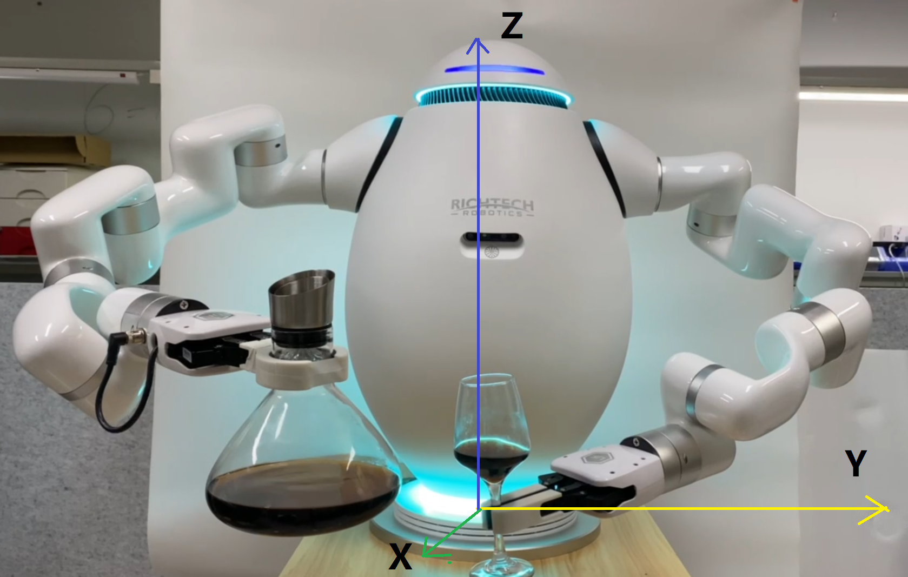

Config Env¶
coluffee config file in /richtech/clouffee/settings, If you want to change key point, please modify wake-demo.yml
User coordinate¶
Adam follows a right-handed coordinate system, the mounted platform is the xoy plane, the x-axis is facing the user, and the z-axis is the normal vector up from the bottom disc.
{kind=link}
adam.yml¶
Most of the time you don’t need to modify this file.
The only config you may need to change is the gripper tcp_offset/tcp_load. You can add a new gripper config like second.
Then modify different_config -> gripper -> name as second.
gripper_config:
first:
tcp_offset:
x: 0
y: 0
z: 210
roll: 0
pitch: 0
yaw: 0
tcp_load:
weight: 0.82
center_of_gravity:
x: 0
y: 0
z: 48
project.ini¶
Please don’t modify it unless you known want you do.
machine.yml¶
adam:
left: 192.168.2.226 # left adam arm ip
right: 192.168.2.240 # right adam arm ip
coffee:
- device: /dev/ttyUSB0 # coffee device
outlet: # coffee machine water outlet point
- device: /dev/ttyUSB1 # coffee device
outlet: # coffee machine water outlet point
gripper:
open: 850 # gripper open distance
close: 280 # gripper close distance
sink: # not use
- # adam arm pour water point
- # adam arm pour water point
put:
- device: /dev/ttyUSB0 # not use
pose: # adam arm put cup point
- device: /dev/ttyUSB1 # not use
pose: # adam arm put cup point
get:
- device: /dev/ttyUSB0 # not use
pose: # adam arm get cup point
- device: /dev/ttyUSB1 # not use
pose: # adam arm get cup point
cup_size:
big: 130
middle: 110
default_speed:
arm: 500 # adam arm move speed in position mode
gripper: 15000 # gripper open and close speed